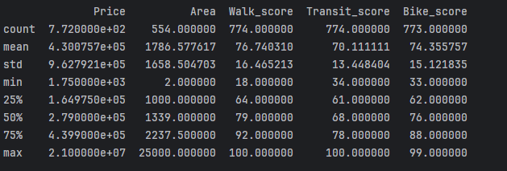

This project involved scraping Chicago real estate listings from online sources and performing analysis. A Python script was created to handle the scraping process and compile a dataset, and Power BI desktop was used to clean the dataset, perform analysis, and provide visualizations. The goal was to identify patterns in rental prices, assess neighborhood livability, and explore factors affecting pricing across different ZIP codes in Chicago.
Key libraries used:
Selenium: Python library used to navigate and extract real estate data from web pages.
Source Considerations
To begin, I inspected listings from different sources to see what kind of information was consistently provided about the rental units. I also had to ensure through the sites' robots.txt that I could use the data collected for eductational purposes. Considering what was most often provided and what might provide interesting insight into the state of Chicago's real estate situation, I selected these attributes for the dataset:
Title: The name of the building housing the unit
Address: The address given for the unit
City: City given for the unit
State: State given for the unit
Zip: ZIP code given for the unit
Price: Monthly rent cost of the unit in dollars
Beds: Number of bedrooms for the unit
Baths: Number of bathrooms for the unit
Area: Area in square feet for the unit
Walk_Score: Score from 1-100 describing the unit location's walkablility
Transit_Score: Score from 1-100 describing the ease of access to the unit location's public transport
Bike_Score: Score from 1-100 describing the unit location's bike friendliness
Web Scraping
Initially, I used the Python library BeautifulSoup for scraping, but most listings were loaded dynamically and weren't found in the raw source html. Due to these restraints, I switched to the library Selenium and implemented grid-based scraping by iterating through map coordinates to fetch pertinent listing pages, then extracted the dataset features from each page. The system I used for scraping is as follows:
Collect listing urls: Each summary card returned in a search links to a more detailed listing page containing the pertinent information for the dataset. These summary cards load in up to 20 pages of 41 cards based on the positioning of an interactive map. By moving the interactive map systematically, every page url link can be extracted. To properly load and store all of these urls:
Set maximum and minimum direction boundaries based on the map space of interest
Set starting north, south, east, and west boundaries; this is a "sector" of the map
Increase north and south coordinates by .0136 to move up one map sector
Iterate through every page at this sector, fetch and store all listing urls in a csv
Repeat (3-4) until the current north coordinate is greater than the direction boundary from (1)
When the north coordinate is greater, return to the original starting sector but add x * .0247 to the east and west coordinates, where x is the number of times the north boundary has been reached. This will move left one map sector. Repeat (3-4).
Stop when the current west coordinate is greater than the maximum west boundary
Collect listing details: After all urls have been collected, iterate through each, fetch all pertinent details, and append them as a row to a csv.
Below is a summary of key statistical measures for the final dataset’s numerical columns, generated using the Pandas describe() function.

Data Mining & Analysis
After gathering the data, I processed and analyzed it using Power BI. Key analyses included:
Price Distribution: Created histograms and box plots to visualize rent price ranges.
Geospatial Analysis: Used filled maps to highlight rental price variations by ZIP code.
Neighborhood Livability: Assessed walkability, transit accessibility, and bike-friendliness by area.
Correlation Analysis: Examined relationships between rent prices and features like square footage and number of bedrooms.
Data Visualization in Power BI
The data was structured into an interactive dashboard, allowing users to filter and explore various attributes.
Heatmap for viewing selected attribute trends by ZIP code.
Stacked column charts comparing walk, transit, and bike scores across ZIP codes.
Scatter plots to identify pricing trends across the top and bottom 10 ZIP codes.
Tree maps to visualize price distributions across different ranges.
Key Findings
ZIP codes having a higher average monthly rent price tend to have higher neighborhood scores
88% of listings have monthly rent costs greater than $1,500, 1% of listings have rent costs less than $1,000
Area and rent price have a positive correlation: as one increases or decreases, so does the other
Downtown ZIP codes win out in all average metrics except for price and area
Code and Implementation
The source code for this project is available on GitHub. The following files are included:
url_assembly.py: Script for scraping all listing urls.
rent_data_assembly.py: Script that collects listing details from list of urls.
requirements.txt: List of required Python packages.
Future Work
Next steps could include incorporating more features to the dataset such as unit type(condo, apartment, house) or popular amentities(pets allowed, gym, personal parking).
More cities and states can easily be incorporated using the same scraping scripts.
Project Takeaways
Before this project, I had never applied web scraping other than in very simple academic work.
Now, I know how to use libraries that allow for scraping dynamic sources rather than only the source html.
In addition, I learned a few techniques to decrease the likelihood of anti-bot or captcha detection.
Outside of Python, I used Power BI for the first time here. I've used Tableau before, and I felt that some knowledge of that
carried over to Power BI. I gained some experience using DAX and Power Query to manipulate data and provide the visualizations that I wanted to.